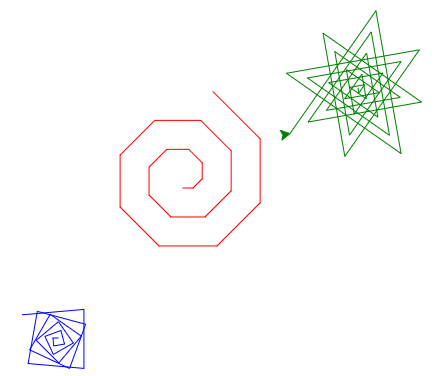

4. Paramétrer¶
Dans ce chapitre, nous revenons sur le concept de la fonction. Dans le chapitre 2 nous avons vu la fonction comme une façon de donner un nom à une séquence d’instructions. Ici nous allons voir comment nous pouvons ajouter un ou plusieurs paramètres à une fonction. Nous allons voir que :
l’expression
def rect(d, e):permet de définir une fonction avec deux paramètres,les paramètres
detesont des variables locales valides uniquement à l’intérieur de la définition de fonction,ces paramètres prennent une valeur au moment de l’appel de la fonction avec, par exemple,
rect(50, 30).
Paramétrer une fonction¶
Jusqu’à maintenant, notre rectangle était d’une taille fixe. La fonction rectangle() du chapitre 2 dessine toujours un rectangle de 160 x 100 pixels. Il faudrait faire une nouvelle fonction rectangle2() si on voulait dessiner une taille différente.
Il serait très utile de disposer d’une fonction de la forme rectangle(d, e) qui puisse dessiner des rectangles de largeur et hauteur variable.
C’est possible en spécifiant des paramètres pour la fonction.
Un paramètre de fonction est une variable locale qui peut être utilisée dans sa définition.
Lors de l’appel de la fonction, nous donnons des valeurs à la fonction. Ces valeurs sont les arguments de la fonction.
Exercice
Aujoutez un deuxième rectangle avec d’autres dimensions.
Solution
...
rectangle(160, 100) # largeur=160, hauteur=100
rectangle(120, 150) # largeur=120, hauteur=150
La fonction losange(d, a) a comme paramètre la longueur et le premier angle. Le deuxième angle du losange est calculé automatiquement.
La fonction polygone(d, n) a comme paramètre la distance du côté et le nombre de sommets.
Dessiner une maison¶
Revenons à notre fonction pour dessiner une maison.
Exercice
Ajoutez une maison de taille 100.
Colorier la maison¶
Maintenant nous modifions la fonction pour inclure non seulement la taille mais également la couleur de la maison comme paramètres. Les arguments de la fonction sont :
d– dimension de la maisonc– couleur de la maison
Exercice
Aujoutez deux autres maisons de taille et couleur différente.
Couleur de remplissage
Avec la fonction fillcolor(c), nous pouvons définir une couleur de remplissage c pour une forme quelconque que nous voulons dessiner. Pour remplir une forme avec une couleur, nous devons ajouter les deux fonctions :
begin_fill()au début de la forme,end_fill()à la fin de la forme.
Bus¶
Pour dessiner un bus, une voiture ou un camion simple, nous pouvons utiliser des rectangles pour le châssis, et un disque (dot) pour les roues.
C’est une fonction qui a pour paramètres:
p– position du busd– dimension (longeur) du busc– couleur du bus
Arbre¶
Pour dessiner un arbre simple, nous utilisons un segment droit pour le tronc et un disque (dot) pour le feuillage.
C’est une fonction qui a 3 paramètres:
d– longueur du troncc– couleur du troncc2– couleur du feuillage
Escalier¶
Voici une fonction permettant de dessiner des escaliers avec les paramètres suivants:
d– longueur de marchee– hauteur de marchen– nombre de marches
Stickman¶
Voici comment dessiner de petits stickmans paramètrables !
Nommer une variable¶
Pour nommer une variable (ou un paramètre), vous pouvez utiliser :
lettres (
a...zetA...Z),chiffres (
0...9),le tiret bas, appelé underscore (
_).
Le nom de variable :
est sensible aux majuscules/minuscules,
ne peut pas commencer avec un chiffre,
ne doit pas être un mot-clé python (
for,if,else,in, etc),
Ces noms de variables sont donc valides : a2, _a, speed, pos_x, POS_X
Exercice récapitulatif¶
Exercice
Reprenez l’exercice récapitulatif du chapitre 3 répéter et créez une fonction spirale pour dessiner votre spirale.
La fonction doit avoir les 3 paramètres suivants:
a: angle entre chaque segmentc: couleur de la spiralen: nombre de segments
Appelez votre fonction 3 fois avec des valeurs différentes pour les paramètres a, c et n, afin d’obtenir 3 spirales différentes:

Vous n’avez pas à reproduire les mêmes spirales que dans l’image ci-dessus.
Téléchargez le fichier .py et déposez le fichier sur Moodle à l’endroit prévu.
Et à part le dessin ?¶
Paramètrer une fonction permet en quelque sorte de la généraliser pour qu’elle puisse être utilisable dans plein de situations.
Rappel
La fonction
print()permet d’afficher du texte.a = 0est une instruction permettant de créer une variableaet lui donner la valeur0.a = a + 3permet d’ajouter 3 à la variablea.
Exercice
Ecrivez une fonction qui permet de calculer l’aire d’un triangle en vous basant sur la longueur de sa base et sa hauteur.
La fonction prend donc 2 paramètres:
basehauteur
Solution
def calcul_aire(base, hauteur):
aire = base*hauteur / 2
print(aire)
calcul_aire(5, 10)
Exercice
Reprenez la solution de l’exercice final du chapitre 3 et écrivez une fonction permettant de calculer la somme des chiffres de 0 à n.
La fonction prend donc un unique paramètre: n.
Solution
def calcul_somme(n):
somme = 0
for i in range(n+1):
somme = somme + i
print(somme)
calcul_somme(100)